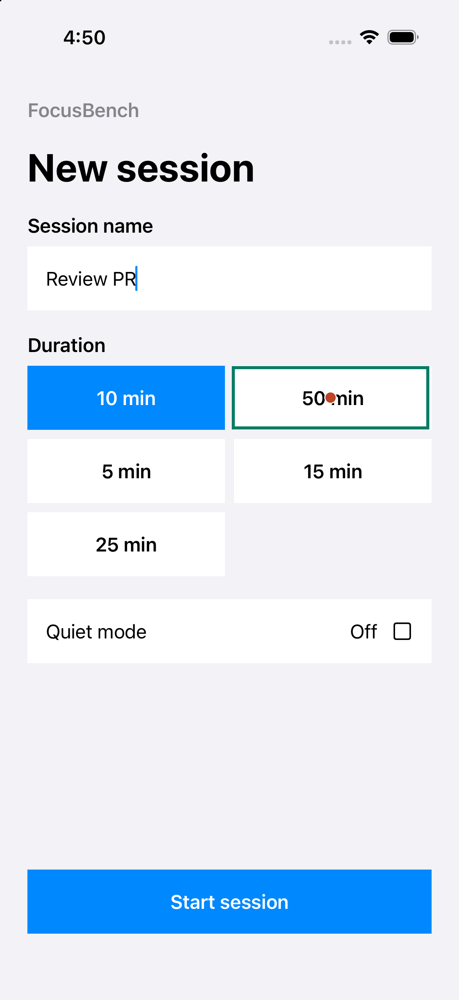

Tree
Choose an observed target
Independent pass8 requests · 12.216 s controller
$0.000347508 reported cost · 10.55 s clip
Model confirmed the goal in a fresh observation
Independent evidence · Actual questions & answersJev can now locate a control in an image. The model returns a rectangle; ordinary code validates it and presses the simulator.
Different context: the latest box run also receives a user-supplied workflow target catalog. Tree and grid receive the goal and approved text literals without that catalog. These demonstrations are not a matched benchmark comparison.
Verified: all three selected runs passed independent app and proof checks. All five box attempts remain. Next / owner: viewer watches a run or inspects a box. Required input: None for replay. Limits: experimental, synthetic demos; agent-skill trials remain separate.

All request typesafe/jev-1.14; each response resolved to typesafe/jev-1.14-20261014. Sequential native runs, independent playback controls, no autoplay or synchronized-race claim.
8 requests · 12.216 s controller
$0.000347508 reported cost · 10.55 s clip
Model confirmed the goal in a fresh observation
Independent evidence · Actual questions & answers22 requests · 26.452 s controller
$0.004824624 reported cost · 26.76 s clip
Model confirmed the goal in a fresh observation
Independent evidence · Actual questions & answers18 requests · 24.056 s controller
$0.002784390 reported cost · 24.40 s clip
Model confirmed the goal in a fresh observation
Independent evidence · Actual questions & answersNo accessibility labels or native control bounds were supplied to the box planner. Green outline: returned full-screen boundaries. Rust dot: the center code calculated.
The edges are fractions of image width and height, measured from the top-left. Multiply their midpoint by the simulator's logical width and height. Resizing the entire screenshot preserves this conversion.
When the first answer is uncertain, one closer crop is allowed. Its returned edges are relative to the crop; code maps them back to the full screenshot before tapping. Every request used here is shown below.
The first three attempts stopped below the presence or confidence gates. A caller-supplied workflow target catalog made the next control explicit, but that fourth run failed with HTTP 400 on a 278-by-394-pixel Quiet mode crop. The fifth run uses the same catalog, enlarged refinement crops and the adapter's empirical 280-pixel minimum side. It completed Review PR for 50 minutes with Quiet mode on and passed independent app and saved-proof checks. The presence and confidence gates remain 0.90 and 0.80.
box · blocked · 4 requests · Box presence or confidence is below the configured gate · Original recording
box-atomic-visibility/box · blocked · 4 requests · Box presence or confidence is below the configured gate · Original recording
box-crop-refinement/box · blocked · 5 requests · Box presence or confidence is below the configured gate · Original recording
box-described-targets/box · failed · 13 requests · Provider returned HTTP 400 · Original recording
box-image-fix/box · completed · 18 requests · Model confirmed the goal in a fresh observation · Original recording
Every attempt is retained. The independent evaluator checks the fixture's persisted name, duration, Quiet mode, phase, and visible result. Model completion alone does not count as a strict pass. The historical 105-episode comparison is unchanged; its Clef/Winnow grid result remains 0/30.
Box policy · Grid policy · Tree policy · CLI recipes
uv run axe-control run --mode box --model typesafe/jev-1.14 \ --udid "$AXE_UDID" --points "$AXE_POINTS" \ --goal "Start a session named Review PR for 50 minutes with Quiet mode on." \ --text "Review PR" \ --target "New session button that opens the session creation form" \ --target "Session name editable text field" \ --target "50 min duration option" \ --target "Quiet mode toggle or checkbox" \ --target "Start session button that starts the configured session" \ --report artifacts/box-run.json
Execution requires macOS, Xcode, AXe, an explicitly chosen booted simulator, the app, actual logical geometry and OpenRouter credentials. It sends screenshots and task context to the provider and incurs usage charges. Replay makes no network or simulator calls.
OpenRouter's model listing and endpoint catalog identify the image-capable Jev 1.14 selector. Actual requests here use POST https://openrouter.ai/api/alpha/decisions, text/image URL state parts, and TypeSafe-Danger-Zone-Images: true. This route was verified with live responses.
TypeSafe's Box documentation defines ordered left/right/top/bottom fractions and required confidence. Official image constraints: PNG/JPEG; each side 256–1568 pixels; area 78,400–2,458,624 pixels. This adapter uses a conservative minimum of 280 pixels per side: live OpenRouter probes on 15 October 2026 rejected a 278×394 crop but accepted 280×397. The adapter scales within its stricter limits without padding, strips metadata, and rejects unsupported geometry. Small grid crops may need enlargement.
The direct TypeSafe endpoint documents an asset-reference wire format and selectors such as jev-1.14.0/jev-preview; those are different from this OpenRouter route. Pin the requested model and retain the resolved response ID rather than assuming a moving latest alias changed.